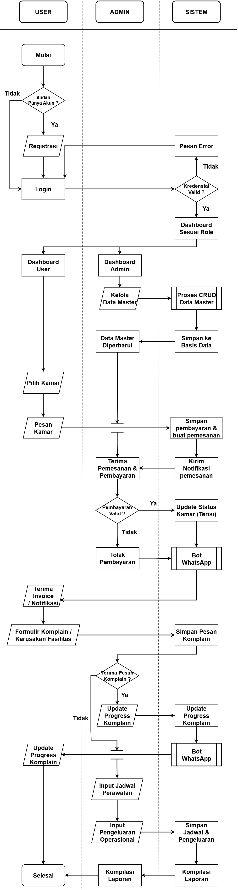
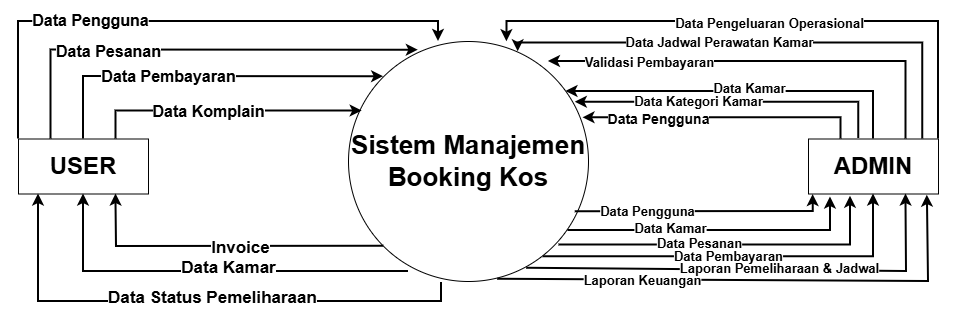
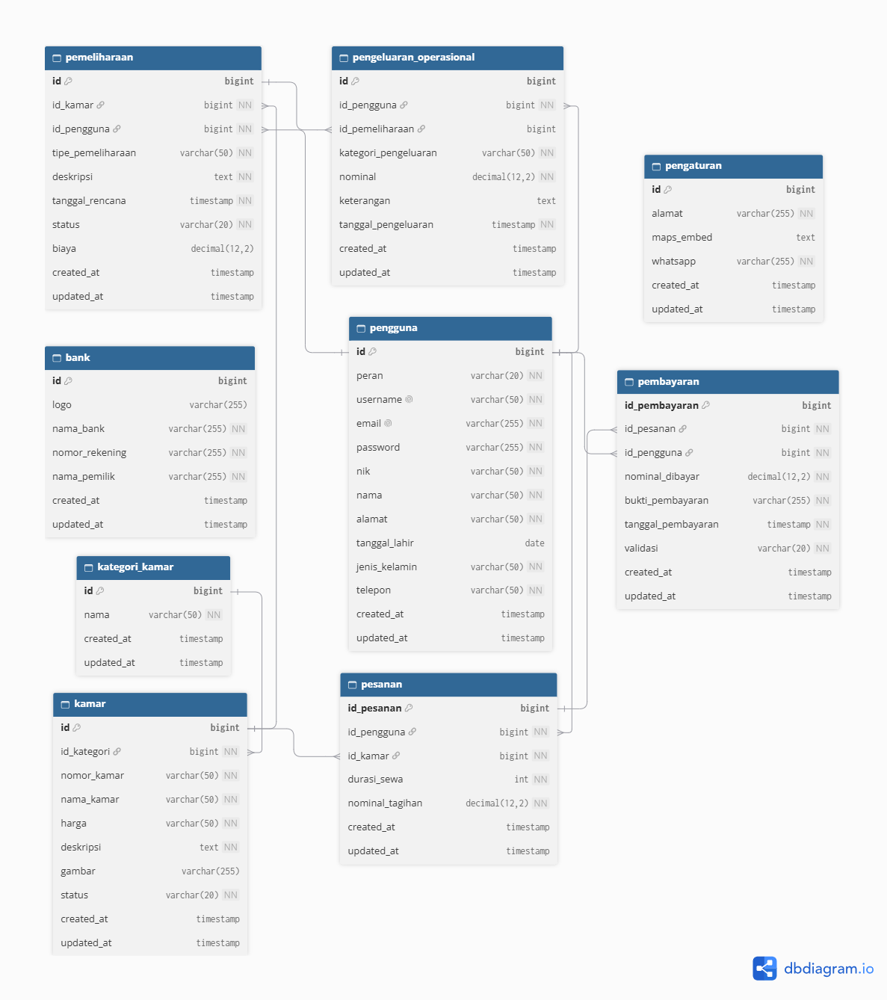

Detail Dokumentasi Proyek
Booking Kos - Overview & Panduan
Dokumentasi dari perancangan sistem informasi manajemen kos digital yang mentransformasikan proses manual menjadi arsitektur aplikasi web terintegrasi dan efisien.
Repositori ini murni menampilkan dokumentasi perancangan sistem dan analisis bisnis. Seluruh source code, konfigurasi server, serta kunci API tidak disematkan untuk mematuhi kebijakan privasi, hak kekayaan intelektual, serta perjanjian kerahasiaan dengan pihak mitra terkait.
Latar Belakang & Analisis Masalah
- Profil Studi Kasus: Kos Titik Kumpul (berlokasi di Sedati, Sidoarjo) merupakan studi kasus nyata penyedia akomodasi kos yang membutuhkan modernisasi alur operasional bisnis sewa kamar.
- Pain Points: Inefisiensi waktu & hambatan jarak survei manual, pengelolaan keuangan konvensional berbasis kertas, serta kompleksitas pemantauan ketersediaan kamar.
Fitur Utama Sistem
Business Requirement Document (BRD)
Sistem Manajemen & Reservasi Kos Titik Kumpul dikembangkan untuk merespon kebutuhan digitalisasi di industri manajemen properti sewa (kamar kos) dengan mengoptimalkan akses informasi spesifikasi kamar dan sentralisasi data operasional.
Problem Statement (Identifikasi Masalah)
- Inefisiensi Waktu dan Lokasi: Proses survei kunjungan kos secara konvensional memakan waktu dan biaya perjalanan bagi calon penyewa dari luar daerah.
- Keterbatasan Metode Transaksi: Sistem pembayaran reservasi yang masih tunai atau manual menimbulkan gesekan operasional serta menyulitkan penyewa.
- Risiko Pembukuan & Pemeliharaan: Pembukuan pendapatan manual rentan terhadap human error, serta perawatan fasilitas rutin belum memiliki pengingat otomatis.
Project Objectives & Scope
- Tujuan: Platform terpusat pencarian informasi dan pemesanan online, menghilangkan risiko selisih pembukuan, serta pemeliharaan rutin terpadu.
- In-Scope: Manajemen pengguna multi-level, manajemen master aset, siklus transaksi & keuangan, pemeliharaan operasional, dan automasi WhatsApp Bot.
Functional & Non-Functional Requirement
Berikut adalah ringkasan spesifikasi kebutuhan fungsional (FR) dan non-fungsional (NFR) sistem:
| ID | Modul / Fitur | Perilaku Sistem |
|---|---|---|
FR-01 |
Registrasi Akun | Memvalidasi dan merekam data diri calon penyewa ke dalam database untuk pembuatan akun baru secara otomatis. |
FR-02 |
Autentikasi Login | Menyediakan gerbang validasi kredensial (username & password) yang aman serta mencocokkannya dengan hak akses role. |
FR-03 |
Manajemen Data Master | Admin melakukan CRUD terhadap data master kamar kos, kategori, fasilitas, serta validasi pesanan & pembayaran. |
FR-04 |
Modul Reservasi / Pemesanan | Menerima, memproses, mencatat, dan mengelola transaksi pemesanan atau booking kamar oleh penyewa. |
FR-05 |
Filter & Manajemen Kamar | Menampilkan opsi ketersediaan kamar kos berdasarkan status (tersedia/tersewa) serta fasilitas secara real-time. |
FR-06 |
Penerbitan Invoice | Menghasilkan lembar tagihan atau invoice digital secara otomatis atas transaksi pemesanan yang berhasil divalidasi. |
FR-07 |
Integrasi Bot WhatsApp | Mengirimkan pesan atau tautan invoice langsung ke nomor WhatsApp penyewa setelah pembayaran divalidasi. |
Pemodelan Sistem & Arsitektur
Dokumen ini memuat rancangan pemodelan, arsitektur aliran data, serta perancangan basis data relasional untuk sistem pemesanan kos berbasis web yang terintegrasi dengan notifikasi otomatis Bot WhatsApp.
1. Flowchart Sistem
Diagram alur operasional sistem mendefinisikan tahapan kerja yang terbagi berdasarkan hak akses pengguna antara Admin dan User secara terstruktur.


Klik gambar untuk memperbesar- Autentikasi Pengguna: Registrasi akun baru dan validasi kredensial login untuk menampilkan dashboard sesuai peran masing-masing.
- Reservasi & Pembayaran: Pengguna memilih kamar, input pemesanan & pembayaran, lalu divalidasi admin untuk update status kamar dan kirim invoice WhatsApp.
- Pemeliharaan & Keuangan: Pengisian komplain fasilitas dan input jadwal perawatan rutin serta pengeluaran operasional oleh admin untuk rekap laporan.
2. Diagram Konteks
Diagram Konteks menggambarkan batasan sistem secara makro dengan memetakan interaksi data antara aktor eksternal dan sistem utama manajemen kos.


Klik gambar untuk memperbesar- User: Mengirimkan Data User, Pesanan, Pembayaran, serta menerima informasi Data Kamar dan dokumen Invoice.
- Admin: Mengirimkan Data Kategori, Kamar, User, Validasi Pembayaran, serta menerima rekapitulasi laporan transaksi.
3. Data Flow Diagram (DFD) Level 1
Diagram Alir Data Level 1 memetakan dekomposisi proses operasional utama sistem ke dalam subsistem fungsional yang terhubung langsung dengan data store internal.
 Klik gambar untuk memperbesar
Klik gambar untuk memperbesar
- Proses 1.0 (Registrasi & Autentikasi): Mengelola pendaftaran akun baru dan verifikasi login ke tabel users.
- Proses 2.0 (Kelola Data Master): Memelihara entitas categories, rooms, dan users.
- Proses 3.0 (Pesan Kos): Memproses pemesanan kamar oleh user dan merekam data transaksi ke tabel pesanan.
- Proses 4.0 & 5.0 (Pembayaran & Laporan): Mengelola bukti transfer, pencocokan status, rekapitulasi laporan, dan distribusi invoice WhatsApp.
4. Relasi Basis Data (ERD)
Perancangan skema basis data relasional yang ternormalisasi untuk menjamin integritas dan efisiensi penyimpanan data operasional sistem reservasi kos.


Klik gambar untuk memperbesar| Tabel Utama | Fungsi / Deskripsi Data |
|---|---|
Users |
Menyimpan informasi profil pengguna, kredensial login, nomor telepon, dan hak akses (role). |
Categories |
Menyimpan data pengelompokan jenis atau tipe kamar kos. |
Rooms |
Menyimpan detail spesifikasi fisik kamar, harga, fasilitas, gambar, serta status ketersediaan. |
Pesanan |
Menjadi tabel transaksional pusat yang menghubungkan relasi antara pengguna, kamar, dan pembayaran. |
Pembayaran |
Mencatat riwayat unggahan bukti bayar, nominal, tanggal, serta status validasi pembayaran. |
Banks & Settings |
Menyimpan referensi rekening tujuan transfer pembayaran serta konfigurasi global aplikasi. |